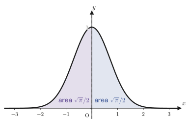
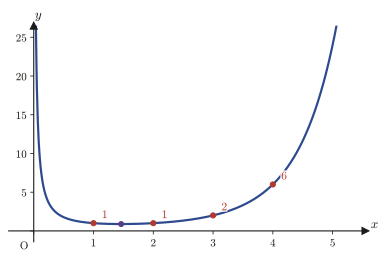
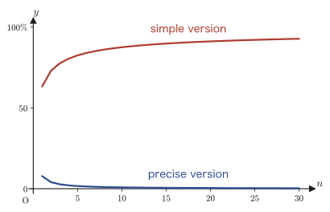
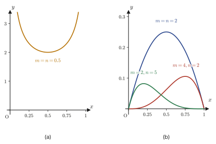

Chapter 32The Gamma Function, the Beta Function, and the Laplace Transform
In the previous chapter we derived a number of basic formulas for the Laplace transform $\Lap[f(t)]=\displaystyle\int_0^\infty f(t)e^{-st}\,dt$. Among them, the formula $\Lap[t^n]=\dfrac{n!}{s^{n+1}}$ ($n$ is a nonnegative integer) can be used for power functions with integer exponents, such as $t^2$ and $t^3$, but when $n$ is not an integer—for example, when we want to find the Laplace transform of $\sqrt t=t^{1/2}$—it cannot be used as it stands, because we have not even defined what “$\left(\frac12\right)!$” means. In this chapter we introduce the gamma function $\Gamma(\alpha)$, which extends the domain of the factorial $n!$ from the integers to the real numbers (and even to the complex numbers), and thereby obtain the general formula $\Lap[t^\alpha]=\dfrac{\Gamma(\alpha+1)}{s^{\alpha+1}}$, which holds for arbitrary real exponents. You will see that the formula of the previous chapter is merely the special case of this general formula in which $\alpha$ is restricted to nonnegative integers.
Along with these, we also study the beta function $B(m,n)$, which stands in a sibling-like relationship to the gamma function, as well as the error function $\mathrm{erf}(x)$ and the complementary error function $\mathrm{erfc}(x)$, which appear in the area under the graph of the normal distribution (the bell-shaped curve) and in the description of diffusion in materials. We also derive Stirling's formula, which approximates $n!$ for large $n$—a formula used heavily in entropy calculations in statistical mechanics and in combinatorics. In the original notes this precise proof ends partway through, but in this book we use the technique of the Gaussian integral proved in Chapter 7 to carry it through to the end ourselves, and arrive at the beautiful formula $n!\approx\sqrt{2\pi n}\,n^ne^{-n}$.
- The definitions of the error function $\mathrm{erf}(x)=\dfrac{2}{\sqrt\pi}\displaystyle\int_0^xe^{-u^2}du$ and the complementary error function $\mathrm{erfc}(x)=\dfrac{2}{\sqrt\pi}\displaystyle\int_x^\infty e^{-u^2}du$, the identity $\mathrm{erf}(x)+\mathrm{erfc}(x)=1$, and applications to diffusion in materials science (carburizing, impurity doping, and so on)
- The definition of the gamma function $\Gamma(\alpha)=\displaystyle\int_0^\infty x^{\alpha-1}e^{-x}dx$, and its four basic properties $\Gamma(1)=1$, $\Gamma(1/2)=\sqrt\pi$, $\Gamma(\alpha+1)=\alpha\Gamma(\alpha)$, $\Gamma(n+1)=n!$, together with their proofs
- Why the gamma function appears in Laplace transforms: the general formula $\Lap[t^\alpha]=\dfrac{\Gamma(\alpha+1)}{s^{\alpha+1}}$ ($\alpha\gt-1$) and its relation to $\Lap[t^n]=n!/s^{n+1}$ of the previous chapter
- Stirling's formula: the derivation of the simple version $n!\approx n^ne^{-n}$ (the Riemann-sum method) and of the precise version $n!\approx\sqrt{2\pi n}\,n^ne^{-n}$ (Laplace's method, an application of the Gaussian integral)
- The definition of the beta function $B(m,n)=\displaystyle\int_0^1x^{m-1}(1-x)^{n-1}dx$, its symmetry $B(m,n)=B(n,m)$, and the proof of its relation to the gamma function, $B(m,n)=\dfrac{\Gamma(m)\Gamma(n)}{\Gamma(m+n)}$
Source notes: Yasuhide Mochizuki, Mathematics Notes: Laplace Transforms, pp. 15–18.
32.1 The Error Function and the Complementary Error Function
Following the title “Special Functions” of the original notes, this chapter begins by introducing two functions—the error function $\mathrm{erf}(x)$ and the complementary error function $\mathrm{erfc}(x)$—that are built from improper integrals (definite integrals whose interval of integration extends to infinity; Chapter 5, Section 5.4). Both are based on the Gaussian integral that we proved in Chapter 7, Section 7.5. In fact, when proving that integral in Chapter 7, we remarked in a single sentence that “an antiderivative of $e^{-x^2}$ cannot be expressed in terms of elementary functions, so we have no choice but to define it as a special function called the error function.” This section squarely defines what that “special function” actually is.
32.1.1 Definition of the error function
Theorem 7.1 (the Gaussian integral) in Chapter 7 gave the following value.
\begin{equation} \int_{-\infty}^{\infty} e^{-x^2}\,dx = \sqrt\pi \label{eq:32-gauss-full} \end{equation}Now let us look at the integrand $e^{-x^2}$. Even if we replace $x$ by $-x$, we have $(-x)^2=x^2$, so $e^{-(-x)^2}=e^{-x^2}$; that is, this function is an even function (a function satisfying $f(-x)=f(x)$). The graph of an even function is symmetric about the $y$-axis, so the area formed by the part with $x\lt0$ and the area formed by the part with $x\gt0$ each make up exactly half of the whole (Figure 32.1). Therefore, dividing the area $\sqrt\pi$ in Eq. \eqref{eq:32-gauss-full} equally between left and right, we obtain:
\begin{equation} \int_0^{\infty} e^{-x^2}\,dx = \frac{\sqrt\pi}{2} \label{eq:32-gauss-half} \end{equation}Eq. \eqref{eq:32-gauss-half} is the origin of the coefficient $2/\sqrt\pi$ in the error function that we are about to define.

Definition 32.1: Error function
The function defined by the following improper integral is called the error function and is written $\mathrm{erf}(x)$.
\begin{equation} \mathrm{erf}(x) = \frac{2}{\sqrt\pi}\int_0^x e^{-u^2}\,du \label{eq:32-erf-def} \end{equation}Why do we attach the coefficient $2/\sqrt\pi$?
Even the plain function $\displaystyle\int_0^x e^{-u^2}du$ without any coefficient is perfectly natural in the sense of “the area from $0$ to $x$.” As it stands, however, its limit as $x\to\infty$ would be the awkward value $\sqrt\pi/2$ by Eq. \eqref{eq:32-gauss-half}. So if we multiply the whole by the reciprocal of $\sqrt\pi/2$ (twice that, so as to match the sign: $2/\sqrt\pi$), we get
$$ \lim_{x\to\infty}\mathrm{erf}(x) = \frac{2}{\sqrt\pi}\int_0^{\infty}e^{-u^2}\,du = \frac{2}{\sqrt\pi}\cdot\frac{\sqrt\pi}{2} = 1 $$so the function approaches $1$ cleanly as $x\to\infty$; it becomes a normalized function (normalization means arranging for the total quantity to be set to the reference value $1$). It is the same idea as in physics and statistics, where taking the reference value to be $1$, as in “the probabilities sum to $1$” or “the energy distribution sums to $1$,” often makes the formulas easier to handle.
32.1.2 The complementary error function and erf(x)+erfc(x)=1
Definition 32.2: Complementary error function
The function defined by the following improper integral is called the complementary error function and is written $\mathrm{erfc}(x)$. The reason for attaching the coefficient $2/\sqrt\pi$ is the same as in Definition 32.1.
\begin{equation} \mathrm{erfc}(x) = \frac{2}{\sqrt\pi}\int_x^{\infty} e^{-u^2}\,du \label{eq:32-erfc-def} \end{equation}
Formula 32.1: $\mathrm{erf}(x)+\mathrm{erfc}(x)=1$ (for all real numbers $x$)
Proof
We split the interval over which $e^{-u^2}$ is integrated, from $u=0$ to $u=\infty$, at the intermediate point $u=x$ into two pieces, “from $0$ to $x$” and “from $x$ to $\infty$” (splitting the interval of integration: wherever we cut the interval, the sum of the definite integrals does not change).
$$ \int_0^{\infty} e^{-u^2}\,du = \int_0^{x} e^{-u^2}\,du + \int_x^{\infty} e^{-u^2}\,du $$The left-hand side equals $\sqrt\pi/2$ by Eq. \eqref{eq:32-gauss-half}. Multiplying both sides by $2/\sqrt\pi$, the first term on the right becomes exactly the integral expression for $\mathrm{erf}(x)$ in Definition 32.1, and the second term exactly the integral expression for $\mathrm{erfc}(x)$ in Definition 32.2, so
$$ \frac{2}{\sqrt\pi}\cdot\frac{\sqrt\pi}{2} = \frac{2}{\sqrt\pi}\int_0^x e^{-u^2}\,du + \frac{2}{\sqrt\pi}\int_x^{\infty} e^{-u^2}\,du $$ \begin{equation} \therefore\quad \mathrm{erf}(x)+\mathrm{erfc}(x) = 1 \label{eq:32-erf-erfc-sum} \end{equation}∎
Example 32.1: Checking basic values and an application to the concentration distribution in carburizing
(a) Show directly from Definition 32.2 that $\mathrm{erfc}(0)=1$. (b) In carburizing, in which carbon is diffused into the surface of a steel material, it is known in materials science that the carbon concentration at depth $x$ from the surface and treatment time $t$ is approximated, using the diffusion coefficient $D$ and the surface concentration $C_s$, by a complementary-error-function form, $C(x,t)=C_s\,\mathrm{erfc}\!\left(\dfrac{x}{2\sqrt{Dt}}\right)$ (deriving this formula itself requires solving the diffusion equation, which is a partial differential equation, and falls within the scope of a later volume in this series; here we accept the resulting formula and use it). Find the concentration ratio $C(x,t)/C_s$ at the point of depth $x=2\sqrt{Dt}$ (a reference point in the sense that diffusion has advanced by “one tick mark”).
Solution. (a) Substituting $x=0$ into Definition 32.2, we get
$$ \mathrm{erfc}(0) = \frac2{\sqrt\pi}\int_0^{\infty}e^{-u^2}\,du = \frac2{\sqrt\pi}\cdot\frac{\sqrt\pi}2 = 1 $$(We used Eq. \eqref{eq:32-gauss-half}.) This does not contradict Formula 32.1 either: setting $x=0$ there and combining it with $\mathrm{erf}(0)=\frac2{\sqrt\pi}\int_0^0e^{-u^2}du=\frac2{\sqrt\pi}\cdot0=0$ (the width of the interval of integration is $0$, so the value of the integral is also $0$), we get $\mathrm{erf}(0)+\mathrm{erfc}(0)=0+1=1$.
(b) Substituting $x=2\sqrt{Dt}$, we have $\dfrac{x}{2\sqrt{Dt}}=\dfrac{2\sqrt{Dt}}{2\sqrt{Dt}}=1$, so the concentration ratio is
$$ \frac{C(x,t)}{C_s} = \mathrm{erfc}(1) $$Here $\mathrm{erfc}(1)=1-\mathrm{erf}(1)$ (Formula 32.1), and since $\mathrm{erf}(1)$ cannot be expressed in terms of elementary functions, we find it by numerical integration (verified with Python's scipy.special.erf), obtaining $\mathrm{erf}(1)\approx0.842701$; therefore
That is, at the depth $x=2\sqrt{Dt}$ the carbon concentration has dropped to about $15.7\%$ of the surface concentration $C_s$. An expression of the same form also appears in semiconductor doping (impurity diffusion) and in approximating temperature distributions in heat treatment—every phenomenon in which “a constant value is maintained at the boundary (the surface) while diffusion proceeds inward over time” obeys the same diffusion equation, so even the form of the solution (the complementary error function) is shared. In addition, $\mathrm{erf}(x)$ is closely related to the tail probabilities of the normal distribution in statistics: it is known that the probability that a random variable $Z$ following the standard normal distribution falls in the interval $[-a,a]$ can be written as $P(-a\le Z\le a)=\mathrm{erf}(a/\sqrt2)$.
32.2 Definition and Basic Properties of the Gamma Function
In Formula 31.3 of Chapter 31 we saw that $\Lap[t^n]=\dfrac{n!}{s^{n+1}}$ holds only when $n$ is an integer greater than or equal to $0$. What happens, then, when the exponent is not an integer, as in $\Lap[\sqrt t\,]=\Lap[t^{1/2}]$? If we try to use this formula as it stands, we run into the symbol “$\left(\frac12\right)!$,” whose meaning has not been defined. So in this section we introduce the gamma function $\Gamma(\alpha)$, which extends the factorial $n!=n(n-1)(n-2)\cdots2\cdot1$ even to non-integer real arguments.
32.2.1 Definition of the gamma function — as a generalization of the factorial
Definition 32.3: Gamma function
For a real number $\alpha\gt0$, the function defined by the following improper integral is called the gamma function and is written $\Gamma(\alpha)$.
\begin{equation} \Gamma(\alpha) = \int_0^{\infty} x^{\alpha-1}e^{-x}\,dx \label{eq:32-gamma-def} \end{equation}Caution: When does this integral converge?
The improper integral in Eq. \eqref{eq:32-gamma-def} actually has two “dangerous” points. The first is that the upper limit of integration is $\infty$—but the exponential function $e^{-x}$ approaches $0$ strictly faster than any integer power $x^{k}$ (as $x\to\infty$, $x^k e^{-x}\to0$), so the integral causes no trouble where $x$ is large. The second is that, when $\alpha\lt1$, the integrand $x^{\alpha-1}$ diverges as $x\to0$—but as long as $\alpha\gt0$, this divergence is “mild enough to be integrable” (as one can see from the fact that $\int_0^1 x^{\alpha-1}dx=\left[\frac{x^\alpha}{\alpha}\right]_0^1=\frac1\alpha$ is a finite value), so the improper integral as a whole converges properly. Therefore Definition 32.3 makes sense whenever $\alpha\gt0$.
Example 32.2: Computing $\Gamma(2)$ from the definition
Following Definition 32.3, compute $\Gamma(2)$ directly.
Solution. Substituting $\alpha=2$ into Definition 32.3 gives $\Gamma(2)=\displaystyle\int_0^{\infty}x^{2-1}e^{-x}\,dx=\int_0^{\infty}xe^{-x}\,dx$. Using integration by parts (taking $u=x,\ dv=e^{-x}dx$ gives $du=dx,\ v=-e^{-x}$), we obtain
$$ \int xe^{-x}\,dx = -xe^{-x}+\int e^{-x}\,dx = -xe^{-x}-e^{-x} = -(x+1)e^{-x} $$At the upper limit, $x\to c\to\infty$, we have $(c+1)e^{-c}\to0$, as confirmed in the Caution box. At the lower limit $x=0$, we have $-(0+1)e^0=-1$. Therefore,
$$ \Gamma(2) = \Big[-(x+1)e^{-x}\Big]_0^{\infty} = \lim_{c\to\infty}\big(-(c+1)e^{-c}\big)-(-1) = 0+1 = 1 $$This is the value of the integral (verified with SymPy). We have $\Gamma(2)=1=1!$, which agrees exactly with the general formula $\Gamma(n+1)=n!$ (the case $n=1$) shown later in Section 32.2.3. This pattern of “agreeing with the factorial” is the reason $\Gamma$ is called a “generalization of the factorial.”

32.2.2 Basic properties (I) and (II): $\Gamma(1)=1$, $\Gamma(1/2)=\sqrt\pi$
Formula 32.2: $\Gamma(1)=1$
Proof
Substituting $\alpha=1$ into Definition 32.3, and noting that $x^{1-1}=x^0=1$, we get
$$ \Gamma(1) = \int_0^{\infty} x^{1-1}e^{-x}\,dx = \int_0^{\infty}e^{-x}\,dx = \lim_{c\to\infty}\Big[-e^{-x}\Big]_0^{c} = \lim_{c\to\infty}\big(-e^{-c}+1\big) = 1 $$(Since $e^{-c}\to0$ as $c\to\infty$, the limit is $1$.) ∎
Formula 32.3: $\Gamma\!\left(\dfrac12\right)=\sqrt\pi$
Proof
Substituting $\alpha=\frac12$ into Definition 32.3 gives
$$ \Gamma\left(\frac12\right) = \int_0^{\infty}x^{\frac12-1}e^{-x}\,dx = \int_0^{\infty}x^{-\frac12}e^{-x}\,dx $$Now we make the substitution $x=t^2$ ($t\ge0$). Differentiating $x=t^2$ with respect to $t$ (by the differentiation formula for power functions) gives $\dfrac{dx}{dt}=2t$, that is, $dx=2t\,dt$. The interval of integration corresponds directly: when $x=0$ we have $t=0$, and when $x\to\infty$ we have $t\to\infty$. Also, $x^{-1/2}=(t^2)^{-1/2}=t^{-1}=\dfrac1t$, so
$$ \Gamma\left(\frac12\right) = \int_0^{\infty} \frac1t\,e^{-t^2}\cdot2t\,dt $$Since $\dfrac1t\cdot2t=2$ (the factors cancel exactly for $t\ne0$),
$$ \Gamma\left(\frac12\right) = \int_0^{\infty}2e^{-t^2}\,dt = 2\int_0^{\infty}e^{-t^2}\,dt $$Finally, substituting Eq. \eqref{eq:32-gauss-half} (that is, $\int_0^\infty e^{-t^2}dt=\sqrt\pi/2$, with only the symbol for the variable changed from $x$ to $t$), we obtain
\begin{equation} \Gamma\left(\frac12\right) = 2\cdot\frac{\sqrt\pi}2 = \sqrt\pi \label{eq:32-gamma-half} \end{equation}∎
32.2.3 Basic properties (III) and (IV): the recurrence relation $\Gamma(\alpha+1)=\alpha\Gamma(\alpha)$ and $\Gamma(n+1)=n!$
Formula 32.4: $\Gamma(\alpha+1)=\alpha\,\Gamma(\alpha)$ ($\alpha\gt0$)
Proof
Substituting $\alpha+1$ into Definition 32.3 gives
$$ \Gamma(\alpha+1) = \int_0^{\infty}x^{(\alpha+1)-1}e^{-x}\,dx = \int_0^{\infty}x^{\alpha}\,e^{-x}\,dx $$Using integration by parts (taking $u=x^{\alpha},\ dv=e^{-x}dx$ gives $du=\alpha x^{\alpha-1}dx,\ v=-e^{-x}$), we obtain
$$ \int x^{\alpha}e^{-x}\,dx = x^{\alpha}\cdot(-e^{-x}) - \int \alpha x^{\alpha-1}\cdot(-e^{-x})\,dx = -x^{\alpha}e^{-x} + \alpha\int x^{\alpha-1}e^{-x}\,dx $$Evaluating this as an improper integral from $0$ to $\infty$ (with the upper limit understood as the limit $c\to\infty$) gives
$$ \int_0^{\infty} x^{\alpha}e^{-x}\,dx = \Big[-x^{\alpha}e^{-x}\Big]_0^{\infty} + \alpha\int_0^{\infty} x^{\alpha-1}e^{-x}\,dx $$We examine the boundary terms. At the lower limit $x=0$, for $\alpha\gt0$ we have $-0^{\alpha}\cdot e^0=-0\cdot1=0$. At the upper limit $x\to\infty$, as confirmed in the Caution box, the exponential function approaches $0$ faster than any power function, so
$$ \lim_{x\to\infty}\left(-\frac{x^{\alpha}}{e^{x}}\right) = -0 = 0 $$Hence the boundary terms become $0$ altogether, and only the second term remains. The integral in the second term has exactly the form of $\Gamma(\alpha)$ in Definition 32.3, so
\begin{equation} \Gamma(\alpha+1) = 0 + \alpha\int_0^{\infty}x^{\alpha-1}e^{-x}\,dx = \alpha\,\Gamma(\alpha) \label{eq:32-gamma-recur} \end{equation}∎
Formula 32.5: $\Gamma(n+1)=n!$ ($n=0,1,2,\ldots$)
Proof
Using Formula 32.4 (the recurrence relation) repeatedly with $\alpha=n,n-1,n-2,\ldots,1$, in this order, we obtain the $n$ equalities
$$ \Gamma(n+1)=n\,\Gamma(n),\quad \Gamma(n)=(n-1)\,\Gamma(n-1),\quad \ldots,\quad \Gamma(2)=1\cdot\Gamma(1) $$Substituting all of these and joining them into a single equation, we get
$$ \Gamma(n+1) = n\cdot(n-1)\cdot(n-2)\cdots2\cdot\Gamma(1) $$Substituting Formula 32.2 ($\Gamma(1)=1$) into this gives
\begin{equation} \Gamma(n+1) = n\cdot(n-1)\cdot(n-2)\cdots2\cdot1 = n! \label{eq:32-gamma-fact} \end{equation}∎
Example 32.3: Computing $\Gamma(5/2)$ from the recurrence relation
Use Formula 32.4 ($\Gamma(\alpha+1)=\alpha\Gamma(\alpha)$) and Formula 32.3 ($\Gamma(1/2)=\sqrt\pi$) to find $\Gamma(5/2)$.
Solution. Since $\dfrac52=\dfrac32+1$, substituting $\alpha=\dfrac32$ into Formula 32.4 gives $\Gamma\!\left(\dfrac52\right)=\dfrac32\,\Gamma\!\left(\dfrac32\right)$. Further, since $\dfrac32=\dfrac12+1$, substituting $\alpha=\dfrac12$ into Formula 32.4 gives $\Gamma\!\left(\dfrac32\right)=\dfrac12\,\Gamma\!\left(\dfrac12\right)=\dfrac12\sqrt\pi$ (we used Formula 32.3). Combining these two,
$$ \Gamma\left(\frac52\right) = \frac32\cdot\frac12\sqrt\pi = \frac34\sqrt\pi $$This is the answer (numerically, $\Gamma(5/2)\approx1.329340$; verified with SymPy). We see that even for a non-integer argument, if we lower the argument step by step with the recurrence relation until we reach $\Gamma(1/2)=\sqrt\pi$, the value can always be written in the form “rational number $\times\sqrt\pi$.”
Example 32.4: Evaluating an exponential-type integral with the gamma function: $\displaystyle\int_0^{\infty}x^3e^{-2x}\,dx$
Use the gamma function to find $\displaystyle\int_0^{\infty}x^3e^{-2x}\,dx$.
Solution. Definition 32.3 involves $e^{-x}$ (the coefficient in the exponent being $1$), so we first make the substitution $u=2x$ ($du=2\,dx$, that is, $dx=\dfrac{du}2$) to make the coefficient in the exponent equal to $1$. Since $x=\dfrac u2$, we have $x^3=\dfrac{u^3}8$, and the interval of integration corresponds directly: $x=0\to u=0$, $x\to\infty\to u\to\infty$.
$$ \int_0^{\infty}x^3e^{-2x}\,dx = \int_0^{\infty}\frac{u^3}{8}\,e^{-u}\cdot\frac{du}{2} = \frac1{16}\int_0^{\infty}u^{3}e^{-u}\,du = \frac1{16}\,\Gamma(4) $$(The last integral is exactly the form obtained from Definition 32.3 with $\alpha-1=3$, that is, $\alpha=4$.) By Formula 32.5, $\Gamma(4)=3!=6$, so
$$ \int_0^{\infty}x^3e^{-2x}\,dx = \frac{6}{16} = \frac38 $$This is the value of the integral (verified: it agrees with the result $3/8$ obtained by direct integration with SymPy). This computation can be generalized: if $n$ is an integer greater than or equal to $0$ and $a\gt0$, the same substitution $u=ax$ gives
\begin{equation} \int_0^{\infty}x^ne^{-ax}\,dx = \frac{\Gamma(n+1)}{a^{n+1}} = \frac{n!}{a^{n+1}} \label{eq:32-power-exp-integral} \end{equation}This is a convenient formula. In Section 32.2.4 below, we will see that almost exactly the same computation as in this formula is precisely the Laplace transform itself.
32.2.4 The bridge between the gamma function and the Laplace transform
Looking closely at Eq. \eqref{eq:32-power-exp-integral}, we notice that it has almost the same form as Definition 31.1 of Chapter 31 (the Laplace transform $\Lap[f(t)]=\int_0^\infty f(t)e^{-st}dt$). In fact, if instead of $f(t)=t^n$ we consider the general $t^{\alpha}$ ($\alpha\gt-1$), whose exponent need not be an integer, exactly the same computation can be used as it is.
Theorem 32.1: Generalization of the Laplace transform of power functions by the gamma function
If $\alpha\gt-1$ and $s\gt0$, then
\begin{equation} \Lap[t^{\alpha}] = \frac{\Gamma(\alpha+1)}{s^{\alpha+1}} \label{eq:32-laplace-bridge} \end{equation}holds.
Proof
Substitute $f(t)=t^{\alpha}$ into Definition 31.1 and make the substitution $x=st$ (since $s\gt0$ is a constant, $dx=s\,dt$ and $t=x/s$). The interval of integration corresponds directly: $t=0\to x=0$, $t\to\infty\to x\to\infty$.
$$ \Lap[t^{\alpha}] = \int_0^{\infty}t^{\alpha}e^{-st}\,dt = \int_0^{\infty}\left(\frac xs\right)^{\alpha}e^{-x}\,\frac{dx}{s} = \frac1{s^{\alpha+1}}\int_0^{\infty}x^{\alpha}e^{-x}\,dx $$The last integral is none other than Definition 32.3 itself (with $\alpha$ in place of $\alpha-1$, that is, Definition 32.3 with the argument $\alpha+1$), so it equals $\Gamma(\alpha+1)$, and
$$ \Lap[t^{\alpha}] = \frac{\Gamma(\alpha+1)}{s^{\alpha+1}} $$∎
Intuition: The meaning of this chapter's title
In Theorem 32.1, taking in particular $\alpha=n$ (an integer greater than or equal to $0$), Formula 32.5 ($\Gamma(n+1)=n!$) immediately gives
$$ \Lap[t^n] = \frac{\Gamma(n+1)}{s^{n+1}} = \frac{n!}{s^{n+1}} $$We have thus returned exactly to Formula 31.3 of Chapter 31. In other words, the formula of Chapter 31 was merely the “case where $\alpha$ is an integer” of the general formula, Theorem 32.1. Thanks to the gamma function, even when $\alpha$ is not an integer—for example, even for $\alpha=1/2$—the Laplace transform can be computed with the same single formula. This is why the title of this chapter includes “and the Laplace Transform.”
Example 32.5: Finding $\Lap[\sqrt t\,]$ with the gamma function
Use Theorem 32.1 to find $\Lap[\sqrt t\,]=\Lap[t^{1/2}]$.
Solution. Taking $\alpha=\dfrac12$ in Theorem 32.1, we get
$$ \Lap\!\left[t^{1/2}\right] = \frac{\Gamma\!\left(\frac12+1\right)}{s^{\frac12+1}} = \frac{\Gamma\!\left(\frac32\right)}{s^{3/2}} $$$\Gamma\!\left(\dfrac32\right)$ is found by substituting $\alpha=\dfrac12$ into Formula 32.4: $\Gamma\!\left(\dfrac32\right)=\dfrac12\,\Gamma\!\left(\dfrac12\right)=\dfrac12\sqrt\pi$ (Formula 32.3). Therefore,
$$ \Lap\!\left[\sqrt t\,\right] = \frac{\frac12\sqrt\pi}{s^{3/2}} = \frac{\sqrt\pi}{2\,s^{3/2}} $$This is the result (checked directly with SymPy's laplace_transform; the two results agree). The problem stated at the beginning—“we cannot find $\Lap[\sqrt t\,]$, since we do not know what $\left(\frac12\right)!$ means”—has thus been properly resolved by the gamma function.
32.3 Stirling's Formula
As $n$ grows, $n!$ grows at an astonishing speed (for example, $20!\approx2.43\times10^{18}$). For this reason, in the entropy calculations of statistical mechanics and in combinatorics, there are very many situations in which, instead of dealing with $n!$ itself, we want an approximation formula valid for large $n$. This approximation is called Stirling's formula. In the original notes, a rough “simple version” is derived first by the Riemann-sum method, and then a derivation of the more accurate “precise version” is attempted, but the proof ends partway through a manipulation of an equation. In this section, we reproduce the simple version completely, following the notes, and for the precise version we carry the proof through to the end ourselves, starting from the point where the notes stop and using Taylor's theorem from Chapter 4 and the Gaussian-integral technique from Chapter 7.
32.3.1 Derivation of the simple version (Riemann-sum method)
Taking the natural logarithm of both sides of $n!=1\cdot2\cdot3\cdots n$, the property of logarithms $\ln(ab)=\ln a+\ln b$ turns the product into a sum.
$$ \ln n! = \ln(1\cdot2\cdot3\cdots n) = \ln1+\ln2+\cdots+\ln n = \sum_{k=1}^{n}\ln k $$We approximate this sum $\displaystyle\sum_{k=1}^n\ln k$ by the integral $\displaystyle\int_1^n\ln x\,dx$. This is an application of the Riemann-sum method that you learned in high school mathematics (the relationship between $\Sigma$ and $\displaystyle\int$: the idea of viewing an integral as the limit obtained by approximating a function with thin rectangles and making the widths of the rectangles finer). Here we keep the width of the rectangles fixed at $1$ (we do not let $n\to\infty$) and regard $\ln k$ as the area of a rectangle of constant height over the interval $[k-1,k]$ (Figure 32.4).
![A graph with the horizontal axis x marked from 1 to 7 and the vertical axis y marked ln2, ln3, ln4, ln5, ln6, ln7 upward from the origin, showing the smooth curve y=ln x increasing from the origin. For each of the intervals [1,2], [2,3], ..., [6,7], a rectangle of width 1 whose height is the function value at the right endpoint is drawn; these step-like rectangles are laid side by side under the curve, and the upper-right corner of each rectangle lies exactly on the curve. This shows how the sum Σln k is approximated by the integral ∫ln x dx.](figs/ch32_fig32-4.svg)
To evaluate the integral $\displaystyle\int_1^n\ln x\,dx$, we use the indefinite integral formula $\displaystyle\int\ln x\,dx=x\ln x-x+C$ (the formula by integration by parts that we learned in Chapter 5):
$$ \int_1^{n}\ln x\,dx = \Big[x\ln x-x\Big]_1^{n} = (n\ln n-n)-(1\cdot\ln1-1) $$Since $\ln1=0$, the second pair of parentheses on the right-hand side equals $(0-1)=-1$. Therefore,
$$ \int_1^{n}\ln x\,dx = n\ln n-n-(-1) = n\ln n-n+1 $$Approximating the sum by this integral (as Figure 32.4 shows, the right-endpoint approximation is slightly larger than the true integral, but it is known that the difference remains negligibly small compared with the whole of $n\ln n$ even as $n$ grows), we obtain
$$ \sum_{k=1}^{n}\ln k \fallingdotseq \int_1^{n}\ln x\,dx = n\ln n-n+1 $$When $n\gg0$ ($n$ is sufficiently large), the trailing constant $+1$ is negligibly small compared with $n\ln n$ and $n$, so we may drop it.
$$ \sum_{k=1}^{n}\ln k \fallingdotseq n\ln n-n $$Math Note: Combining $n\ln n-n$ into a single logarithm
We combine $n\ln n-n$ into the form of a single logarithm, so that it will be easy later to bring it down from the exponent of the exponential function. Using $n=n\ln e$ (since $\ln e=1$),
$$ n\ln n-n = n\ln n-n\ln e = \ln n^n-\ln e^n = \ln\frac{n^n}{e^n} = \ln\!\left(n^ne^{-n}\right) $$(The first equality used the constant-multiple formula for logarithms $k\ln a=\ln a^k$ twice. The second equality is the subtraction formula for logarithms $\ln a-\ln b=\ln\frac ab$. The third equality is $\frac1{e^n}=e^{-n}$.)
Substituting this rewriting, we obtain
$$ \ln n! \fallingdotseq \ln\!\left(n^ne^{-n}\right) $$Removing the logarithm from both sides (since the logarithm function $\ln$ is monotonically increasing, $\ln A=\ln B$ implies $A=B$), we obtain the following approximation formula.
Formula 32.6: Stirling's formula (simple version)
\begin{equation} n! \fallingdotseq n^ne^{-n} \qquad(n\gg0) \label{eq:32-stirling-simple} \end{equation}However, this simple version is an approximation that captures only the order of magnitude (the number of digits) correctly, and its ratio to the actual value does not approach $1$ even as $n$ becomes large (we confirm this numerically in the next Example 32.6 and Figure 32.5). To obtain a more precise approximation, we must treat more carefully the details that the Riemann-sum method discarded. That is the precise version that follows.
32.3.2 Derivation of the precise version (Laplace's method)
In the original notes, the proof of the precise version $n!\fallingdotseq\sqrt{2\pi n}\,n^ne^{-n}$ ends at the point where the following equation has been written (p. 17).
$$ n! = \Gamma(n+1) = \int_0^{\infty}x^ne^{-x}\,dx = \int_0^{\infty}e^{\ln x^n}\cdot e^{-x}\,dx = \int_0^{\infty}e^{n\ln x-x}\,dx $$(The first equality is Formula 32.5; the second is Definition 32.3; the third uses $x^n=e^{\ln x^n}$ (we can rewrite it this way because the logarithm and the exponential are inverse operations of each other); the fourth uses the law of exponents $e^{a}\cdot e^{b}=e^{a+b}$ from left to right.) Nothing is written beyond this point, but by focusing on the exponent $g(x)=n\ln x-x$ of this integral, we can follow the rest of the argument ourselves. This is called Laplace's method (also called the saddle-point method), the standard technique for approximating an integral whose exponent forms a sharp peak.
Step 1: Find the top of the peak. Differentiating $g(x)=n\ln x-x$ with respect to $x$ gives $g'(x)=\dfrac nx-1$. This is $0$ when $x=n$, and since $g''(x)=-\dfrac n{x^2}\lt0$ (always negative for $x\gt0$), $x=n$ is the maximum point of $g$. The maximum value is $g(n)=n\ln n-n$—this is exactly the expression that appeared in the simple version.
Step 2: Taylor-expand around the top. Centered at the maximum point $x=n$, we rewrite $g(x)$ by setting $x=n+y$ ($y$ is a variable close to $0$).
$$ g(n+y) = n\ln(n+y)-(n+y) = n\left[\ln n+\ln\!\left(1+\frac yn\right)\right]-n-y = n\ln n+n\ln\!\left(1+\frac yn\right)-n-y $$(We used the product formula for logarithms: $\ln(n+y)=\ln\!\left[n\left(1+\frac yn\right)\right]=\ln n+\ln\!\left(1+\frac yn\right)$.) Now, by Taylor's theorem from Chapter 4, when $\varepsilon$ is close to $0$, $\ln(1+\varepsilon)\approx\varepsilon-\dfrac{\varepsilon^2}2$ holds (the Taylor expansion up to the second-order term). Substituting $\varepsilon=\dfrac yn$, we obtain
$$ n\ln\!\left(1+\frac yn\right) \approx n\left(\frac yn-\frac{y^2}{2n^2}\right) = y-\frac{y^2}{2n} $$Substituting this, we obtain
$$ g(n+y) \approx n\ln n+\left(y-\frac{y^2}{2n}\right)-n-y = (n\ln n-n)-\frac{y^2}{2n} = g(n)-\frac{y^2}{2n} $$In other words, near the maximum point $x=n$, $g(x)$ descends from the top value $g(n)$ in proportion to the square of $y=x-n$—exactly the same shape as approximating the top of a peak by a parabola (the coefficient of $y^2$ is negative).
Step 3: Return to the exponential and obtain a Gaussian integral. We change the integration variable from $x$ to $y=x-n$ ($dx=dy$, $x=0\to y=-n$, $x\to\infty\to y\to\infty$).
$$ n! = \int_{-n}^{\infty}e^{g(n+y)}\,dy \approx \int_{-n}^{\infty}e^{g(n)-\frac{y^2}{2n}}\,dy = e^{g(n)}\int_{-n}^{\infty}e^{-\frac{y^2}{2n}}\,dy $$When $n$ is large, the integrand $e^{-y^2/(2n)}$ has already become practically $0$ well before $y=-n$ (where $|y|$ is larger than about $\sqrt n$). Therefore, even if we extend the lower limit of the integral from $y=-n$ to $y=-\infty$, the value hardly changes (we keep this part to an intuitive explanation—a proper estimate requires techniques learned in university analysis).
$$ \int_{-n}^{\infty}e^{-\frac{y^2}{2n}}\,dy \approx \int_{-\infty}^{\infty}e^{-\frac{y^2}{2n}}\,dy $$This integral is a relative of the Gaussian integral $\int_{-\infty}^{\infty}e^{-x^2}dx=\sqrt\pi$ of Chapter 7. Making the substitution $y=\sqrt{2n}\,w$ ($dy=\sqrt{2n}\,dw$), we have $\dfrac{y^2}{2n}=\dfrac{2n\,w^2}{2n}=w^2$, so
$$ \int_{-\infty}^{\infty}e^{-\frac{y^2}{2n}}\,dy = \int_{-\infty}^{\infty}e^{-w^2}\sqrt{2n}\,dw = \sqrt{2n}\int_{-\infty}^{\infty}e^{-w^2}\,dw = \sqrt{2n}\cdot\sqrt\pi = \sqrt{2\pi n} $$Finally, substituting $e^{g(n)}=e^{n\ln n-n}=e^{\ln n^n}\cdot e^{-n}=n^ne^{-n}$ (we restored the result of Step 1 by rewriting the exponent), we obtain
$$ n! \approx n^ne^{-n}\cdot\sqrt{2\pi n} $$Formula 32.7: Stirling's formula (precise version)
\begin{equation} n! \fallingdotseq \sqrt{2\pi n}\,n^ne^{-n} \qquad(n\gg0) \label{eq:32-stirling-precise} \end{equation}Caution: This derivation is not a “rigorous proof”
The three-step argument above stacks up several intuitive approximations, such as truncating $\ln(1+\varepsilon)$ at second order and allowing the interval of integration to be extended from $-n$ to $-\infty$. A truly rigorous proof (bounding the approximation error by inequalities to show that it indeed becomes negligible as $n\to\infty$) requires more specialized tools from university analysis. However, that Formula 32.7 obtained as the conclusion is a correct approximation can be confirmed numerically in the next Example 32.6—and its accuracy is incomparably better than that of the simple version (Formula 32.6).
Example 32.6: Comparing the simple version, the precise version, and the true value at $n=10$
For $n=10$, compare the approximate values given by Stirling's formula (simple and precise versions) with the true value $10!=3628800$, and find the relative error of each.
Solution. The simple version (Formula 32.6) gives $n^ne^{-n}=10^{10}e^{-10}\approx453999.3$. The relative error with respect to the true value $3628800$ is
$$ \frac{|3628800-453999.3|}{3628800}\approx87.5\% $$This is very large. On the other hand, the precise version (Formula 32.7) gives $\sqrt{2\pi\cdot10}\times453999.3\approx7.9266\times453999.3\approx3598696$. The relative error with respect to the true value is
$$ \frac{|3628800-3598696|}{3628800}\approx0.83\% $$which is smaller than that of the simple version by nearly two orders of magnitude (verified with Python). Figure 32.5 plots the relative errors for $n=1$ through $30$ for both the simple version and the precise version. The relative error of the simple version keeps approaching $100\%$ as $n$ is increased ($1-\frac1{\sqrt{2\pi n}}\to1$), whereas the relative error of the precise version approaches $0$ monotonically with $n$. This is the difference made by the presence or absence of the factor $\sqrt{2\pi n}$.

32.4 The Beta Function
Another special function, related to the gamma function almost like a sibling, is the beta function. In the original notes, only the definition is written, and the notes end right after the heading “(11) Properties of the Beta Function” (the body text is not in the notes; the rest of the page is left blank, and the notes end there). In this section, after giving the definition exactly as in the original notes, we derive on our own two basic properties that a textbook would naturally supply—symmetry and the relation to the gamma function.
32.4.1 Definition of the beta function
Definition 32.4: Beta function
For $m\gt0,\ n\gt0$, the function defined by the following definite integral is called the beta function and is written $B(m,n)$.
\begin{equation} B(m,n) = \int_0^1 x^{m-1}(1-x)^{n-1}\,dx \label{eq:32-beta-def} \end{equation}When $m\lt1$ or $n\lt1$, the integrand diverges at the endpoint $x=0$ or $x=1$, but for the same reason as for the gamma function (the divergence is only mild), the integral converges as an improper integral as long as $m\gt0,n\gt0$.

32.4.2 Symmetry $B(m,n)=B(n,m)$
Theorem 32.2: Symmetry of the beta function
\begin{equation} B(m,n) = B(n,m) \label{eq:32-beta-symmetric} \end{equation}Heuristic: Why does symmetry seem likely?
In the integrand $x^{m-1}(1-x)^{n-1}$ of Definition 32.4, if we completely interchange the roles of $x$ and $(1-x)$, we obtain a form in which the exponents $m$ and $n$ are interchanged. Moreover, the interval of integration $[0,1]$ itself is mapped exactly onto itself by the transformation $x\mapsto1-x$, which “swaps the two endpoints” (only $x=0$ and $x=1$ are exchanged, so as an interval we return to the same $[0,1]$). From these two symmetries, we can expect that $B(m,n)=B(n,m)$ holds. A rigorous proof is left to Exercise 32.5 at the end of this chapter (Hint: it suffices to carry out the substitution $x=1-u$).
32.4.3 Relation to the gamma function $B(m,n)=\dfrac{\Gamma(m)\Gamma(n)}{\Gamma(m+n)}$
Theorem 32.3: Relation between the beta function and the gamma function
\begin{equation} B(m,n) = \frac{\Gamma(m)\,\Gamma(n)}{\Gamma(m+n)} \label{eq:32-beta-gamma} \end{equation}Proof
Following Definition 32.3, we write the product of $\Gamma(m)$ and $\Gamma(n)$ as a product of two independent integrals (we use different symbols $x,y$ for the integration variables).
$$ \Gamma(m)\,\Gamma(n) = \left(\int_0^{\infty}x^{m-1}e^{-x}\,dx\right)\left(\int_0^{\infty}y^{n-1}e^{-y}\,dy\right) = \int_0^{\infty}\!\!\int_0^{\infty} x^{m-1}y^{n-1}e^{-(x+y)}\,dx\,dy $$(A product of two independent single-variable integrals can be combined into a single double integral, by the same idea as was used in the proof of the Gaussian integral in Chapter 7.) Now we introduce new variables $t,s$ as “the sum of the pair $x,y$” and “the fraction of that sum taken up by $x$.”
$$ x = ts,\qquad y = t(1-s) \qquad(t\gt0,\ 0\lt s\lt1) $$(Then $x+y=ts+t(1-s)=t$ and $x/(x+y)=s$.) We compute the Jacobian of this transformation following Definition 7.2 in Chapter 7.
$$ \pdiff{x}{t}=s,\quad \pdiff{x}{s}=t,\quad \pdiff{y}{t}=1-s,\quad \pdiff{y}{s}=-t $$ $$ |J| = \left|\begin{vmatrix} s & t \\ 1-s & -t\end{vmatrix}\right| = \big|s\cdot(-t)-t\cdot(1-s)\big| = \big|-st-t+st\big| = |-t| = t $$(Since $t\gt0$, the absolute value can be dropped.) Therefore $dx\,dy=t\,dt\,ds$. Also, $x^{m-1}y^{n-1}=(ts)^{m-1}\big(t(1-s)\big)^{n-1}=t^{m-1}t^{n-1}s^{m-1}(1-s)^{n-1}=t^{m+n-2}s^{m-1}(1-s)^{n-1}$, and $e^{-(x+y)}=e^{-t}$. Substituting these, we obtain
$$ \Gamma(m)\Gamma(n) = \int_0^{\infty}\!\!\int_0^{1} t^{m+n-2}s^{m-1}(1-s)^{n-1}e^{-t}\cdot t\,ds\,dt = \int_0^{\infty}\!\!\int_0^{1} t^{m+n-1}e^{-t}\,s^{m-1}(1-s)^{n-1}\,ds\,dt $$Since the integrand is a product of a part depending only on $t$ and a part depending only on $s$, the double integral can be factored into a product of two single-variable integrals (the reverse of the earlier manipulation).
$$ \Gamma(m)\Gamma(n) = \left(\int_0^{\infty}t^{m+n-1}e^{-t}\,dt\right)\left(\int_0^{1}s^{m-1}(1-s)^{n-1}\,ds\right) $$The first factor on the right-hand side is Definition 32.3 with $\alpha=m+n$, that is, $\Gamma(m+n)$. The second factor is Definition 32.4 itself, that is, $B(m,n)$. Therefore,
$$ \Gamma(m)\Gamma(n) = \Gamma(m+n)\,B(m,n) $$Dividing both sides by $\Gamma(m+n)$ (which is not $0$ because $m,n\gt0$), we obtain
$$ B(m,n) = \frac{\Gamma(m)\Gamma(n)}{\Gamma(m+n)} $$∎
Example 32.7: Computing $B(2,3)$ in two ways
Compute $B(2,3)$ (a) directly from the integral in Definition 32.4 and (b) from Theorem 32.3 (the relation to the gamma function), and verify that the two results agree.
Solution. (a) Substituting $m=2,n=3$ into Definition 32.4 gives $B(2,3)=\displaystyle\int_0^1x(1-x)^2\,dx$. Expanding $(1-x)^2=1-2x+x^2$,
$$ x(1-x)^2 = x(1-2x+x^2) = x-2x^2+x^3 $$ $$ B(2,3) = \int_0^1(x-2x^2+x^3)\,dx = \left[\frac{x^2}2-\frac{2x^3}3+\frac{x^4}4\right]_0^1 = \frac12-\frac23+\frac14 $$Putting the fractions over a common denominator ($12$), we get $\dfrac6{12}-\dfrac8{12}+\dfrac3{12}=\dfrac1{12}$. Hence $B(2,3)=\dfrac1{12}$.
(b) By Theorem 32.3, $B(2,3)=\dfrac{\Gamma(2)\Gamma(3)}{\Gamma(5)}$. By Formula 32.5 ($\Gamma(n+1)=n!$), $\Gamma(2)=1!=1$, $\Gamma(3)=2!=2$, and $\Gamma(5)=4!=24$, so
$$ B(2,3) = \frac{1\times2}{24} = \frac2{24}=\frac1{12} $$(a) and (b) agree exactly (verified with SymPy). We see that (b), which needs only multiplication of factorials, is overwhelmingly faster than (a), which computes the integral directly—this is the practical value of Theorem 32.3.
Example 32.8: $B(1/2,1/2)=\pi$ — Reunion with the error function and the Gaussian integral
Find $B\!\left(\frac12,\frac12\right)$ in two ways: (a) by Theorem 32.3 (the relation to the gamma function), and (b) by applying the trigonometric substitution $x=\sin^2\theta$ to the integral in Definition 32.4.
Solution. (a) By Theorem 32.3, Formula 32.3 ($\Gamma(1/2)=\sqrt\pi$), and Formula 32.2 ($\Gamma(1)=1$),
$$ B\left(\frac12,\frac12\right) = \frac{\Gamma\!\left(\frac12\right)\Gamma\!\left(\frac12\right)}{\Gamma(1)} = \frac{\sqrt\pi\cdot\sqrt\pi}{1} = \frac{(\sqrt\pi)^2}{1} = \pi $$(b) Substituting $m=n=\frac12$ into Definition 32.4 gives $B\!\left(\frac12,\frac12\right)=\displaystyle\int_0^1\frac{dx}{\sqrt{x(1-x)}}$ (since $x^{-1/2}(1-x)^{-1/2}=\frac1{\sqrt{x(1-x)}}$). With the substitution $x=\sin^2\theta$ ($0\le\theta\le\frac\pi2$), we have $dx=2\sin\theta\cos\theta\,d\theta$ (the chain rule) and $1-x=1-\sin^2\theta=\cos^2\theta$ (a trigonometric identity), so $\sqrt{x(1-x)}=\sqrt{\sin^2\theta\cos^2\theta}=\sin\theta\cos\theta$ (the absolute value can be dropped because both factors are at least $0$ on $0\le\theta\le\frac\pi2$). The interval of integration changes as $x=0\to\theta=0$ and $x=1\to\theta=\frac\pi2$. Therefore,
$$ \int_0^1\frac{dx}{\sqrt{x(1-x)}} = \int_0^{\pi/2}\frac{2\sin\theta\cos\theta}{\sin\theta\cos\theta}\,d\theta = \int_0^{\pi/2}2\,d\theta = 2\cdot\frac\pi2 = \pi $$(a) and (b) agree, and both give $\pi$ (verified with SymPy by direct integration). The error function (Section 32.1), the gamma function (Section 32.2), and the beta function (this section) all trace back to the same Gaussian integral $\int e^{-x^2}dx=\sqrt\pi$—an example in which we see that the special functions studied in this chapter are connected by a single thread.
32.5 Summary and Exercises
32.5.1 Summary
- The error function $\mathrm{erf}(x)=\dfrac2{\sqrt\pi}\displaystyle\int_0^xe^{-u^2}du$ and the complementary error function $\mathrm{erfc}(x)=\dfrac2{\sqrt\pi}\displaystyle\int_x^{\infty}e^{-u^2}du$ are both functions normalized with reference to the Gaussian integral $\int_{-\infty}^{\infty}e^{-x^2}dx=\sqrt\pi$ of Chapter 7, and $\mathrm{erf}(x)+\mathrm{erfc}(x)=1$ (Formula 32.1) holds. The concentration profiles in diffusion phenomena in materials science (such as carburizing) are expressed in the form of $\mathrm{erfc}$.
- The gamma function $\Gamma(\alpha)=\displaystyle\int_0^{\infty}x^{\alpha-1}e^{-x}dx$ ($\alpha\gt0$) is a generalization of the factorial, and the following hold: $\Gamma(1)=1$ (Formula 32.2), $\Gamma(1/2)=\sqrt\pi$ (Formula 32.3), the recurrence relation $\Gamma(\alpha+1)=\alpha\Gamma(\alpha)$ (Formula 32.4), and $\Gamma(n+1)=n!$ (Formula 32.5, where $n$ is an integer greater than or equal to $0$).
- The gamma function is directly linked to the Laplace transform: $\Lap[t^{\alpha}]=\dfrac{\Gamma(\alpha+1)}{s^{\alpha+1}}$ (Theorem 32.1, $\alpha\gt-1$), and when $\alpha$ is an integer this agrees with Formula 31.3 of Chapter 31, $\Lap[t^n]=n!/s^{n+1}$.
- Stirling's formula is an approximation formula for $n!$. There is a simple version $n!\fallingdotseq n^ne^{-n}$ (Formula 32.6, derived by the Riemann-sum method) and a precise version $n!\fallingdotseq\sqrt{2\pi n}\,n^ne^{-n}$ (Formula 32.7, derived by Laplace's method, which uses Taylor expansion and the Gaussian integral). The precise version has a much smaller relative error, which approaches $0$ as $n\to\infty$.
- The beta function $B(m,n)=\displaystyle\int_0^1x^{m-1}(1-x)^{n-1}dx$ ($m,n\gt0$) has the symmetry $B(m,n)=B(n,m)$ (Theorem 32.2) and the relation to the gamma function $B(m,n)=\dfrac{\Gamma(m)\Gamma(n)}{\Gamma(m+n)}$ (Theorem 32.3). In particular, $B(1/2,1/2)=\pi$ is a good example showing that the error function, the gamma function, and the beta function studied in this chapter all lead back to the same Gaussian integral.
32.5.2 Exercises
Exercise 32.1: Find $\Gamma(7/2)$.
Use Formula 32.4 ($\Gamma(\alpha+1)=\alpha\Gamma(\alpha)$) repeatedly, working down to $\Gamma(1/2)=\sqrt\pi$ (Formula 32.3).
Hint: As in $\dfrac72=\dfrac52+1=\left(\dfrac32+1\right)+1=\left(\left(\dfrac12+1\right)+1\right)+1$, lower the argument by $1$ at a time until you reach $\dfrac12$. It suffices to repeat the same procedure as in Example 32.3 ($\Gamma(5/2)$) with one more step.
Exercise 32.2: Show that $\mathrm{erf}(x)+\mathrm{erfc}(x)=1$ by a method different from the one in the main text (differentiation).
Formula 32.1 was proved in the main text by splitting the interval of integration; here, derive the same conclusion by computing $\dfrac d{dx}\big[\mathrm{erf}(x)+\mathrm{erfc}(x)\big]$.
Hint: By the fundamental theorem of calculus (Chapter 5), $\dfrac d{dx}\displaystyle\int_0^xe^{-u^2}du=e^{-x^2}$, and the same theorem can also be applied (paying attention to the sign) to the integral $\displaystyle\int_x^{\infty}e^{-u^2}du$, whose upper limit is a constant and whose lower limit is the variable. Use the fact that a function whose derivative is identically $0$ is a constant function (a corollary of Theorem 2.2, the mean value theorem learned in Chapter 2), and finally substitute $x=0$ to determine the constant (you may use the results of Example 32.1(a), $\mathrm{erfc}(0)=1$ and $\mathrm{erf}(0)=0$).
Exercise 32.3: Compute $\Lap[t^3]$ from the gamma function formula and compare it with the result of Chapter 31.
Compute $\Lap[t^3]$ using Theorem 32.1 ($\Lap[t^{\alpha}]=\Gamma(\alpha+1)/s^{\alpha+1}$), and verify that it agrees with the result obtained by setting $n=3$ in Formula 31.3 of Chapter 31 ($\Lap[t^n]=n!/s^{n+1}$).
Hint: Substitute $\alpha=3$ (an integer), and rewrite $\Gamma(4)$ as a factorial by Formula 32.5 ($\Gamma(n+1)=n!$).
Exercise 32.4: Find the relative errors of the simple and precise versions of Stirling's formula for $n=5$.
For $n=5$, find the approximate values given by the simple version (Formula 32.6) and the precise version (Formula 32.7) of Stirling's formula, and compute the relative error (in percent) of each with respect to the true value $5!=120$.
Hint: Simply repeat for $n=5$ exactly the same procedure as in Example 32.6 (the case $n=10$). You may use $e^{-5}\approx0.0067379$.
Exercise 32.5: Prove that $B(m,n)=B(n,m)$ (Theorem 32.2).
Using the substitution $x=1-u$, give a rigorous proof of the symmetry $B(m,n)=B(n,m)$ that we intuitively expected in Section 32.4.2.
Hint: Substitute $x=1-u$ ($dx=-du$) into the integral in Definition 32.4, and pay attention to how the endpoints of the interval of integration are interchanged. The same idea works as in the argument given in the proof of Theorem 32.3 in Section 32.4.3, where the interchange of the upper and lower limits of integration and the reversal of sign cancel each other (or as in the argument for even functions in Exercise 28.3 of Chapter 28).
Exercise 32.6: Compute $B(1,n)$ directly from the definition.
Substitute $m=1$ into Definition 32.4 and find $B(1,n)$ by direct integration. Then also verify that the result agrees with the value computed from Theorem 32.3 ($B(m,n)=\Gamma(m)\Gamma(n)/\Gamma(m+n)$).
Hint: Since $x^{1-1}=x^0=1$, the integrand reduces to just $(1-x)^{n-1}$. Use $\Gamma(1)=1$ (Formula 32.2) and $\Gamma(n+1)=n!$ (Formula 32.5).
32.5.3 References
- Yasuhide Mochizuki, Mathematics Notes: Laplace Transforms (handwritten lecture notes, in Japanese). The source of this chapter.
- Teiji Takagi, Kaiseki Gairon [Outline of Analysis], 3rd revised ed., Iwanami Shoten, 1961 (in Japanese).
- E. T. Whittaker and G. N. Watson, A Course of Modern Analysis, 4th ed., Cambridge University Press, 1927.
- M. Abramowitz and I. A. Stegun (eds.), Handbook of Mathematical Functions, Dover Publications, 1965.
Related simulator: Taylor expansion (helpful for building intuition about the Taylor expansion used in the derivation of the precise version of Stirling's formula in Section 32.3.2).